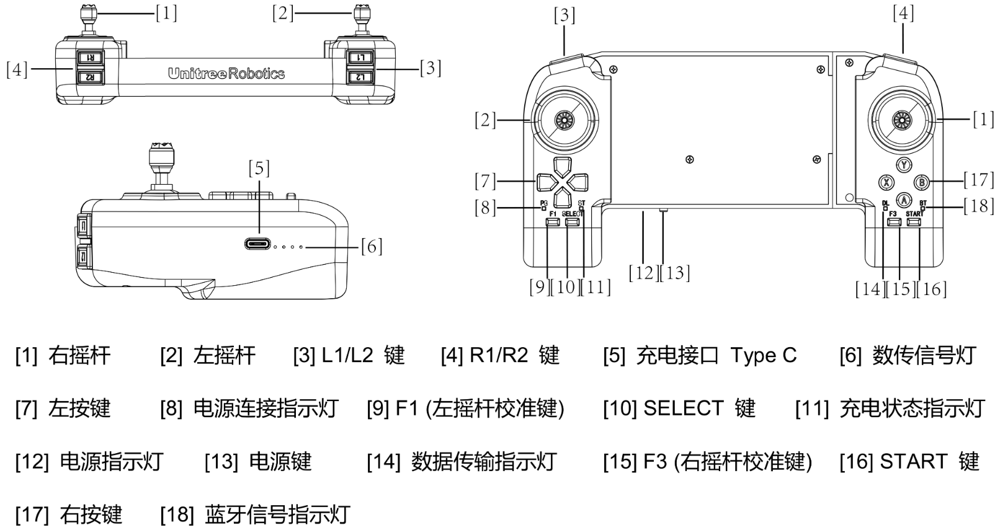

遥控器数据结构
遥控器介绍
遥控器的各部分按键说明如图所示。遥控器的功能主要由左右摇杆和功能按键组成。每个摇杆均有两个自由度，能够输出x和y方向上的摇杆数值，其范围为 [-1.0~1.0]。功能按键/功能按键组合都对应一个唯一的整型键值。底层服务 rt/lowstate 中存储了一个 40 字节的遥控器原始数据，用户可以转化为遥控器数据结构后使用。

遥控器数据
数据结构
typedef union {
struct {
uint8_t R1 : 1;
uint8_t L1 : 1;
uint8_t start : 1;
uint8_t select : 1;
uint8_t R2 : 1;
uint8_t L2 : 1;
uint8_t F1 : 1;
uint8_t F2 : 1;
uint8_t A : 1;
uint8_t B : 1;
uint8_t X : 1;
uint8_t Y : 1;
uint8_t up : 1;
uint8_t right : 1;
uint8_t down : 1;
uint8_t left : 1;
} components;
uint16_t value;
} xKeySwitchUnion;
typedef struct {
uint8_t head[2];
xKeySwitchUnion btn;
float lx;
float rx;
float ry;
float L2;
float ly;
uint8_t idle[16];
} xRockerBtnDataStruct;
xRockerBtnDataStruct 为 40 字节完整遥控器数据对应的数据结构，xKeySwitchUnion 为按键状态。
数据结构转换
unitree_go::msg::dds_::LowState_ dds_low_state;
xRockerBtnDataStruct remote_key_data;
memcpy(&remote_key_data, &dds_low_state.wireless_remote()[0], 40);
使用上述程序片段，可以将 rt/lowstate 中的遥控器原始数据解码为 remote_key_data。